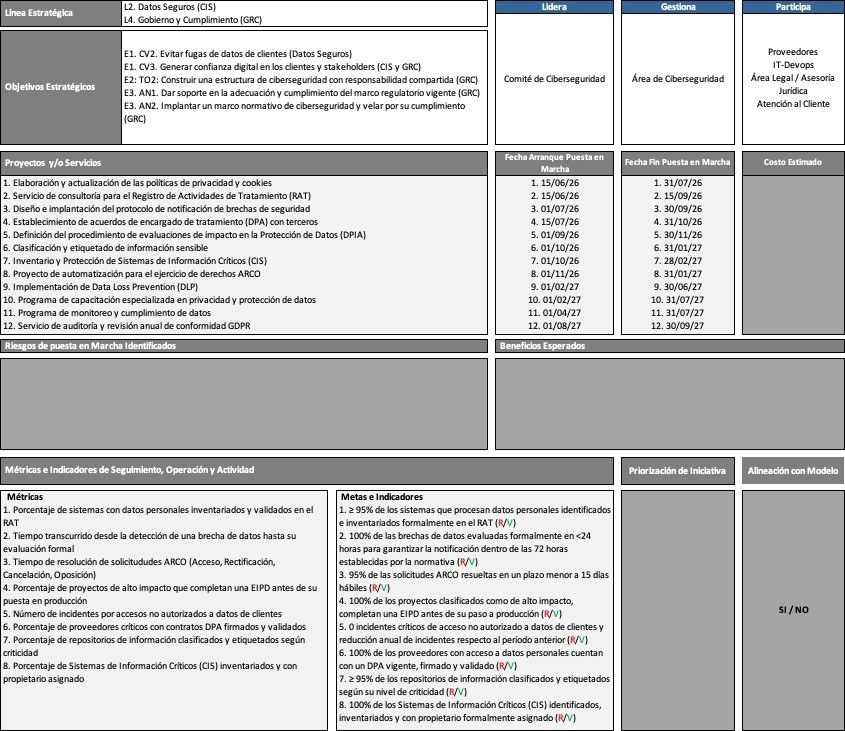
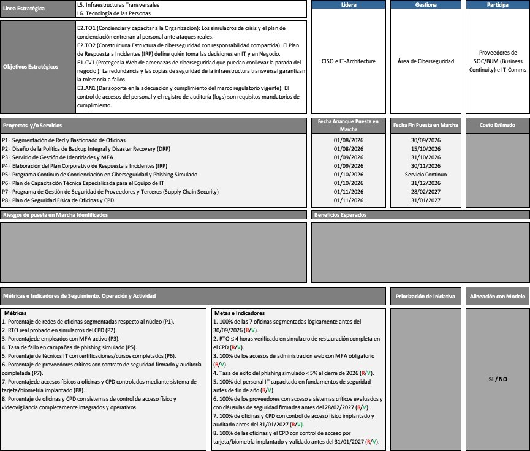

El punto de partida
Por qué la ciberseguridad necesita algo más que comprar herramientas
Instalar un antivirus o contratar un firewall no es, por sí solo, una estrategia de seguridad. El gobierno de la ciberseguridad es la disciplina que decide, de forma explícita y por escrito, quién es responsable de cada riesgo, qué se compromete la organización a hacer al respecto, en qué plazo, y cómo se va a comprobar si funcionó.
Este ejercicio construyó, con esa lógica, dos planes completos para una empresa ficticia de comercio electrónico: uno centrado en proteger los datos de sus clientes, y otro en preparar tanto su infraestructura como a su personal para el día en que algo falle.
Iniciativa 1 — Gobernanza de Datos
Poner bajo control los datos de los clientes, antes de que un descuido se convierta en multa
Una empresa de comercio electrónico maneja grandes volúmenes de datos personales y financieros, repartidos entre oficinas, servidores propios y servicios en la nube. Sin un marco formal que diga qué datos existen, dónde están y quién puede acceder a ellos, esa dispersión genera dos problemas a la vez: hace más probable una fuga de información, y hace mucho más difícil demostrar —ante un regulador, un auditor o un cliente— que la empresa cumple con normativas de protección de datos como el RGPD europeo o los estándares de seguridad de pagos con tarjeta.

- Clasificar la información según su nivel de sensibilidad, para saber qué datos merecen más protección que otros.
- Un inventario de qué sistemas guardan información crítica, con un responsable asignado a cada uno —no basta con saber que el dato existe, alguien tiene que responder por él.
- Una herramienta que impide la fuga de información a través de correo, USB o servicios en la nube sin autorización.
- Un programa de formación para que el personal que maneja datos personales sepa hacerlo de forma segura y conforme a la ley.
Por qué importa para una empresa
Para un negocio online, una fuga de datos no es solo un problema técnico: normativas como el RGPD pueden imponer sanciones económicas directas, y perder la confianza de los clientes después de un incidente suele costar más, a largo plazo, que la multa misma.
Ejemplos de metas concretas del plan
- Cero incidentes críticos de acceso no autorizado a datos de clientes, con tendencia anual decreciente.
- 95% de las solicitudes de derechos de los clientes sobre sus propios datos resueltas en menos de 15 días hábiles.
- 100% de las brechas de datos evaluadas formalmente en menos de 24 horas, para cumplir los plazos legales de notificación.
Iniciativa 2 — Continuidad Operativa y Factor Humano
Preparar tanto la infraestructura como a las personas para el día en que algo falle
La misma empresa opera siete oficinas y un centro de datos propio, pero su red interna no está dividida en compartimentos —lo que significa que un problema en un solo punto puede propagarse al resto—, nunca se ha comprobado de verdad si podría recuperar su operación tras un incidente grave, y su equipo técnico no cuenta con formación específica frente al nivel de amenaza actual. Son dos vulnerabilidades distintas que se refuerzan entre sí: una técnica y una humana.

- Dividir la red interna en compartimentos separados, para que un problema en una oficina no se propague automáticamente a las demás.
- Probar de verdad la recuperación ante un incidente grave, en lugar de asumir que el plan funcionará cuando llegue el momento.
- Exigir un segundo factor de verificación para acceder a cualquier sistema administrativo, más allá de la contraseña.
- Simulacros periódicos de phishing, para entrenar al personal frente al tipo de ataque más frecuente: el correo malicioso.
- Un plan escrito de respuesta a incidentes que defina, antes de que ocurra una crisis, quién decide y quién actúa.
Por qué importa para una empresa
La mayoría de los incidentes graves de seguridad no empiezan con una vulnerabilidad técnica sofisticada, sino con una persona que hace clic en el lugar equivocado. Invertir en la preparación de las personas es tan parte de la seguridad como invertir en la tecnología.
Ejemplos de metas concretas del plan
- Tiempo de recuperación verificado en menos de 4 horas, comprobado en un simulacro real de restauración completa.
- Tasa de éxito de los simulacros de phishing por debajo del 5% hacia el cierre del año.
- 100% de los accesos administrativos protegidos con doble factor de autenticación.
En resumen
Por qué esto importa más allá del ejercicio académico
La empresa de este ejercicio es ficticia, pero el ejercicio en sí es exactamente el que realiza el área de seguridad de cualquier organización real antes de invertir en herramientas técnicas: decidir quién es dueño de cada riesgo, comprometerse con fechas concretas, y definir de antemano cómo se va a medir el éxito. Sin ese nivel de gobierno, hasta la mejor herramienta de seguridad técnica termina siendo un gasto sin dueño y sin forma de comprobar si realmente funcionó.
20 proyectos planificados · 2 iniciativas estratégicas · 15 métricas con meta y fecha límite verificable